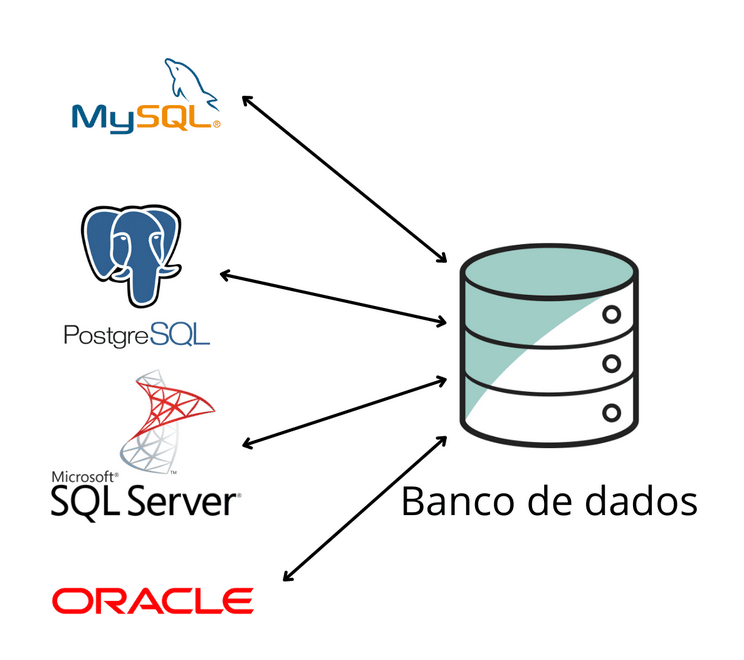

Serviços de programação e tipos de Banco de Dados empregados nos serviços

A lógica de programação é o alicerce do desenvolvimento de software. Ela envolve a forma de pensar e estruturar soluções para problemas, utilizando uma sequência lógica de instruções compreendidas por um computador.
Linguagens de programação são conjuntos de instruções usadas para criar programas e sistemas.
C++ é uma linguagem poderosa e de alto desempenho, derivada de C, que combina eficiência com orientação a objetos. Muito usada em sistemas operacionais, jogos e softwares complexos, com suporte a múltiplos paradigmas e ampla biblioteca padrão (STL). (C++ é usado em circuitos Arduino)
JavaScript é uma inguagem leve e interpretada, usada para criar páginas web interativas e dinâmicas. Funciona tanto no navegador quanto no servidor (Node.js), além de ser aplicada em apps, jogos e IoT.
Java é orientada a objetos e multiplataforma, executada pela Máquina Virtual Java (JVM). Usada em aplicações web, mobile e corporativas, é conhecida por sua portabilidade e ampla adoção.
Python é conhecida por sua sintaxe simples e legibilidade, é amplamente utilizada em áreas como ciência de dados, inteligência artificial, automação, desenvolvimento web e até mesmo em aprendizado de máquina.
PHP é uma linguagem de script do lado do servidor, aberta e focada no desenvolvimento web. Gera conteúdo dinâmico e permite interação entre sites e bancos de dados para oferecer conteúdo personalizado.
Linguagens Interpretadas e Compiladas
Uma linguagem interpretada é executada linha por linha por um interpretador, como o Python e o JavaScript. Já uma linguagem compilada passa por um compilador que traduz todo o código para linguagem de máquina antes da execução, como C++ e Java.
HTML é a Linguagem de Marcação de Hipertexto, um código usado para estruturar e organizar o conteúdo de páginas da web, definindo elementos como títulos, parágrafos, imagens e links. Ele serve como o esqueleto de um site, fornecendo a base para que navegadores e outros recursos interativos funcionem corretamente, sendo um dos pilares da internet.
CSS (Cascading Style Sheets ou Folhas de Estilo em Cascata) é uma linguagem de estilo usada para descrever a aparência de documentos escritos em HTML ou XML, controlando cores, fontes, layouts e outros aspectos visuais de um site para torná-lo atraente e acessível. O HTML estrutura o conteúdo, enquanto o CSS cuida de sua apresentação, permitindo a criação de identidades visuais consistentes e de design

Uma IDE (Ambiente de Desenvolvimento Integrado) é um software que reúne ferramentas essenciais para o desenvolvimento de código em um único local, como um editor de código, um compilador, um depurador e ferramentas de automação. Essa integração aumenta a produtividade dos desenvolvedores ao facilitar o processo de escrita, compilação, teste e depuração de software em uma interface única.

Fundamentos de banco de dados refere-se aos princípios, conceitos e práticas para projetar, construir e gerenciar sistemas de armazenamento de dados de maneira organizada e eficiente. Isso envolve entender como estruturar dados em tabelas (modelagem), usar linguagens de consulta como SQL para recuperar e manipular informações, e garantir a segurança, integridade e acesso confiável através de um sistema de gerenciamento de banco de dados (SGBD).
Um SGBD (Sistema Gerenciador de Banco de Dados) é um software que gerencia e organiza dados em um banco de dados, servindo como intermediário entre os usuários/aplicações e a base de dados para manipulação, consulta, segurança e integridade dos dados. Existem diferentes tipos de SGBD, como Relacionais (com dados em tabelas) e Não-Relacionais (NoSQL, com diferentes estruturas como chave-valor), e são aplicados em sistemas como ERPs, CRMs, e-commerce e gestão de sistemas.
Os principais bancos de dados são o Oracle, MySQL, Microsoft SQL Server, PostgreSQL e MongoDB. Os quatro primeiros são bancos de dados relacionais, o Oracle é um sistema proprietário líder, enquanto MySQL e PostgreSQL são alternativas de código aberto robustas, e o Microsoft SQL Server é amplamente usado em ambientes Windows. Já o MongoDB é um banco de dados NoSQL que oferece flexibilidade para dados não estruturados.
Um dicionário de dados é um repositório que descreve e documenta os metadados de elementos de dados, como variáveis, tabelas e atributos, fornecendo definições, tipos, unidades e regras de uso. Seu principal objetivo é garantir a compreensão, consistência e integridade dos dados dentro de um sistema ou projeto, facilitando a comunicação entre as equipes e permitindo o uso preciso das informações.
Os tipos de dados em um banco de dados se referem às categorias de informações que podem ser armazenadas, como números (inteiros, decimais), texto (strings, caracteres), datas e horas, booleanos (verdadeiro/falso), e tipos de objetos como BLOBs (para armazenar arquivos binários) e documentos (JSON, XML).
A modelagem de banco de dados é um processo para representar a estrutura lógica de um banco de dados, incluindo suas entidades (objetos) e os relacionamentos entre elas, usando modelos conceituais como o MER. O Modelo Entidade-Relacionamento (MER) é uma técnica conceitual para descrever essas entidades, atributos e relacionamentos, enquanto o Diagrama Entidade-Relacionamento (DER) é a representação gráfica do MER, mostrando detalhes como chaves e tipos de dados.
Diferentemente do MER, o DER representa graficamente as relações entre tabelas, usando símbolos padrozinados para fácil entendimento delas.
No exemplo mostrado a direita, temos duas entidades: "Pessoa" e "Carro". As entidades (objetos físicos) são representados por um retângulo no diagrama.
Cada uma dessas entidades, consigo, têm atributos. Esses são simbolizados com pequenos círculos, conectados à sua respectiva entidade.
E entre essas entidades, existe uma relação, sendo ela o símbolo com o texto "Lava". Sendo simbolizada com um losango, a relação mostra como duas ou mais entidades se associam.
Concluindo, dá de se entender que a pessoa lava o carro.